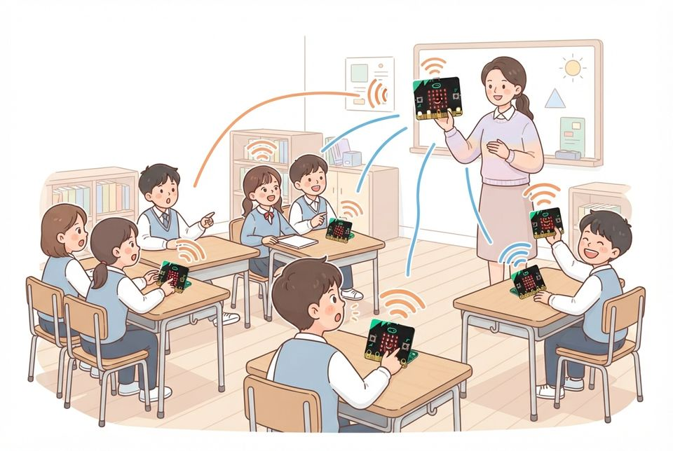
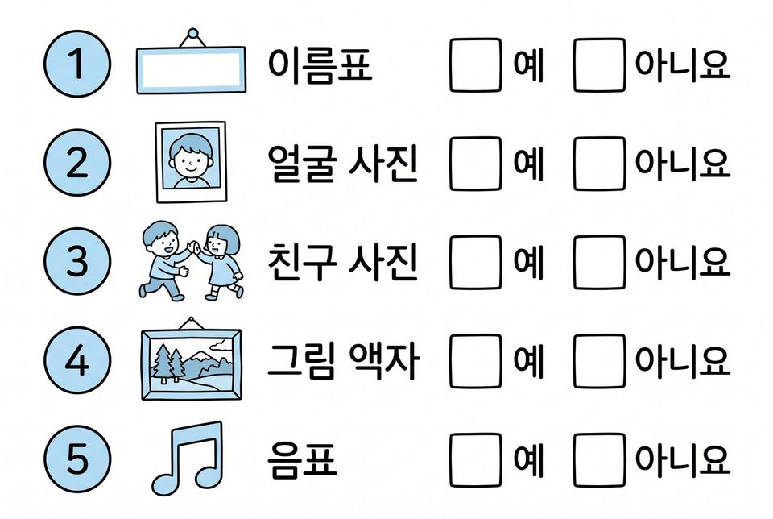
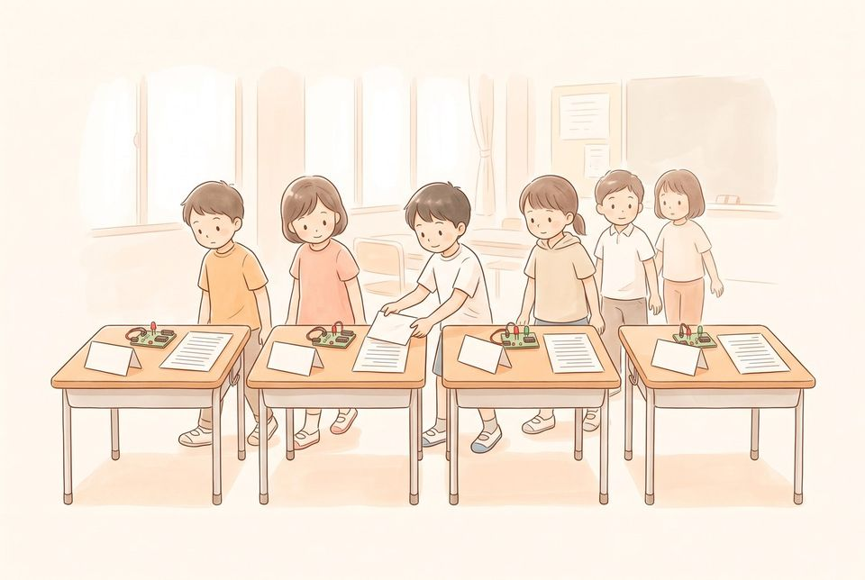
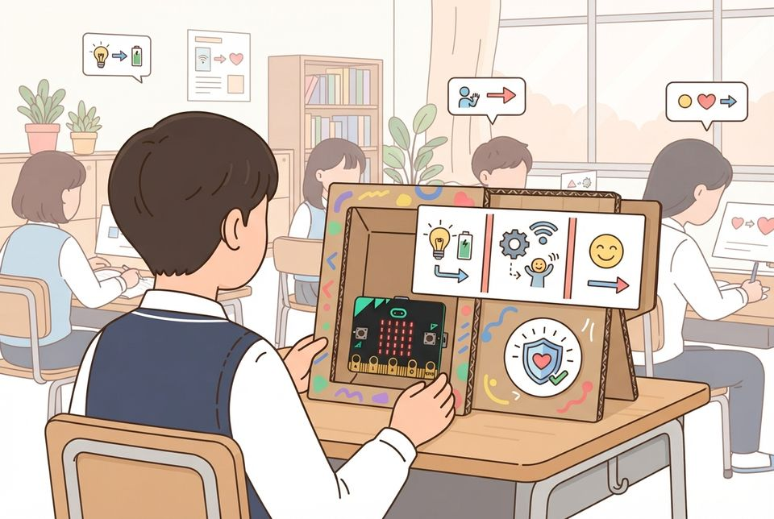

엿듣기 실험과 개인정보·저작물 이용 조건 점검으로 작품을 고쳐 안전하게 전시하기
학습 문제 — 무선 메시지는 누구나 받을 수 있음을 실험으로 알고, 개인정보와 저작물 이용 조건을 점검해 작품을 고쳐 전시해 봅시다.
개요
| 성취기준 | [5실소프트웨어04-02] 무선으로 보낸 정보는 다른 사람도 받을 수 있음을 알고, 개인정보를 보내거나 공개하지 않는다. 작품에 사용한 자료의 출처와 이용 조건을 확인해 밝힌다. 연계 성취기준: [6실05-03] |
|---|---|
| 핵심 역량 | 지식정보처리 역량, 공동체 역량 |
| 핵심 기능 | ① 문제를 해결하는 기초적인 프로그래밍하기 ② 엿듣기 실험으로 무선 메시지의 공개성(정보 보안) 확인하기 ③ 이름·사진·목소리·위치 등 지킬 개인정보 가려내기 ④ 저작물의 허락·출처·CCL 표시를 확인하고 밝히기 ⑤ 점검표로 작품을 고치고 설명 카드를 붙여 전시하기 |
| 가치 태도 | 프로그래밍을 통해 만든 산출물을 타인과 공유하고 협력하려는 자세 다른 사람에게 보이기 전에 개인정보와 저작권을 스스로 살펴보려는 자세 |
교수학습 활동
31차시 도입 동기 유발 · 학습문제 제시31차시 전개 활동1. 엿듣기 실험으로 지킬 정보 넓히기 · 활동2. 저작물 쓰기 전 허락·출처·CCL 확인하기32차시 전개 활동3. 점검표로 작품 고치고 설명 카드 만들기 · 활동4. 교실 전시회 열고 안전 배지 주고받기32차시 정리 배운 내용 정리 · 전시물과 활동지 정리
31차시도입8분
동기 유발
- 박람회에서 옆 부스 신호가 섞일 뻔한 일 떠올리기
- ‘내가 보낸 메시지는 누가 받을 수 있을까?’ 질문에 답하기
- 오늘 미션 ‘안전 공유 배지 받고 전시하기’ 조건 듣기

학습문제 제시
- 무선 메시지는 누구나 받을 수 있음을 실험으로 알고, 개인정보와 저작물 이용 조건을 점검해 작품을 고쳐 전시해 봅시다.
준비물모둠 마이크로비트(송신기·수신기), 배터리 팩
자료모둠 무선 도구·게임 파일, 공유 전 점검 활동지, [도입] 상황 그림
유의점기기 배부·켜기·파일 열기·자리 정돈 시간을 도입 시간에 포함한다.
유의점파일을 열지 못한 학생은 교사가 만든 예시 작품으로 시작하게 한다.
31차시전개32분
활동1. 엿듣기 실험으로 지킬 정보 넓히기 (14분)
- 수신기를 교사가 알려 준 그룹 번호로 바꾸기
- 교사 기기의 연습 메시지가 모두의 화면에 뜨는지 보기(엿듣기)
- 교사가 보낸 거짓 경보로 누가 보냈는지 모름을 알기(가짜 메시지)
- 실험이 끝나면 곧바로 배정받은 그룹 번호로 되돌리기
- 보내면 안 되는 정보 넓히기: 이름·전화번호·비밀번호, 얼굴 사진·목소리·사는 곳·지금 위치

활동2. 저작물 쓰기 전 허락·출처·CCL 확인하기 (18분)
- 자료 카드 여섯 장(그림·소리·게임 규칙) 살펴보기
- 카드의 CCL 표시(BY 출처 밝히기·NC 돈 벌지 않기·ND 바꾸지 않기) 읽기
- ‘그냥 써도 됨·출처 밝히고 씀·허락 받아야 함’으로 나누기
- 친구 그림을 쓸 때 허락 받는 말 짝과 연습하기
- 우리 작품에 빌려 온 그림·소리·게임 규칙 목록과 출처 적기

준비물모둠 마이크로비트, 교사용 마이크로비트, 필기구
자료공유 전 점검 활동지, CCL 표시 자료 카드 6장, 교사가 만든 예시 작품
유의점엿듣기·가짜 메시지 실험은 교사 기기로만 보내고 5분 안에 끝낸다.
유의점실험 메시지는 수나 짧은 영어 낱말만 쓰고 개인정보를 넣지 않는다.
유의점실험 뒤 쉬는 시간·전시 중에도 장난 송신을 하지 않기로 약속한다.
유의점약속을 어기면 기기를 잠시 멈추고 받는 사람의 입장을 함께 이야기한다.
유의점CCL 표시는 네 가지를 외우게 하지 않고 카드를 보며 읽게 한다.
32차시전개33분
활동3. 점검표로 작품 고치고 설명 카드 만들기 (17분)
- 점검표 다섯 항목을 우리 작품에 하나씩 적용해 예·아니요 표시하기
- 아니요인 항목은 어느 코드·화면·카드인지 위치까지 적기
- 이름을 보내는 코드는 약속한 수를 보내도록 바꾸기
- 허락 없는 그림은 빼고 [LED 출력]으로 직접 그리기
- 설명 카드에 사용 방법·주의할 점·참고 자료(출처·CCL) 적기
활동4. 교실 전시회 열고 안전 배지 주고받기 (16분)
- 실제 이름·학교·반을 뺀 소개 쪽지와 설명 카드를 틀 옆에 붙이기
- 전시장을 돌며 다른 작품 두 개를 직접 눌러 써 보기
- 다섯 항목을 모두 지킨 작품에 안전 공유 배지 붙이기
- 걸리는 항목은 번호와 위치만 적어 전해 주기


준비물모둠 마이크로비트, 소개 쪽지 용지, 작품 설명 카드 용지, 안전 공유 배지 스티커, 양면테이프
자료점검표: ①이름·연락처·사진·목소리·위치 보내지 않음 ②배정 그룹 번호
③친구 이름·기록 ④그림·게임 규칙 허락·출처 ⑤소리·음악 허락·출처(CCL)
유의점수업 전 MakeCode에서 [라디오 그룹 설정] 등 실제 블록 이름을 확인한다.
유의점모둠 작품이라도 다섯 항목은 각자 확인해 따로 적고, 처음 판정은 지우지 않게 한다.
유의점전시는 교실 안에서만 하고 인터넷에 올리지 않는다.
유의점전시 중에도 기기는 배정받은 그룹 번호로만 켜 둔다.
유의점느린 학습자에게는 ‘먼저 ~을 누르면 ~이 떠요’ 문장 틀을 준다.
유의점빠른 학습자는 다른 반 전시용 점검 항목을 하나 더 만들게 한다.
32차시정리7분
배운 내용 정리 (5분)
- 무선으로 보내지 않을 정보와 출처를 밝힌 자료 하나씩 적기
- 21~32차시 개인 기록지에서 끝까지 고쳐 다시 시험한 일 찾아 한 줄 쓰기
전시물과 활동지 정리 (2분)
- 아직 ‘아니요’가 남은 곳을 언제 고칠지 적어 두기
- 소개 쪽지와 활동지를 정리해 제출하기
자료고치기와 전시 활동지, 21~32차시 개인 기록지
유의점모둠 작품이어도 정리 질문의 답은 각자 쓰게 하고, 쓰기가 어려우면 말로 확인한다.
유의점결석이나 기기 문제로 확인하지 못한 학생은 미관찰로 따로 적는다.
평가 계획
컴퓨팅 사고력 · 개인정보·저작권을 지키는 공유 점검
엿듣기 실험을 근거로 지킬 개인정보를 가려내고, 저작물의 허락·출처·CCL 표시를 확인해 점검표로 작품을 고쳐 전시할 수 있는가?
| 수준 | 평가 기준 |
|---|---|
| 매우 잘함 | 엿듣기·가짜 메시지 실험 결과를 들어 이름·사진·목소리·위치 등 보내지 않을 정보를 설명한다. 자료 카드의 CCL 표시를 읽어 쓰는 방법을 바르게 나누고, 점검표 다섯 항목을 작품에 적용해 위치를 들어 판정한다. ‘아니요’인 곳을 고쳐 다시 판정하고, 설명 카드에 주의할 점과 출처·CCL을 적어 전시한다. |
| 잘함 | 보내지 않을 개인정보와 CCL 표시에 따른 쓰는 방법을 대체로 바르게 가리고, 점검표로 ‘아니요’인 곳을 고친다. 설명 카드에 출처를 적으나 다시 판정한 기록이나 위치 표시는 일부 빠진다. |
| 보통 | 이름·전화번호 정도만 보내지 않을 정보로 들거나, 자료 카드 분류에 틀린 곳이 있고 설명 카드에 출처가 빠져 있다. |
| 노력요함 | 교사가 항목과 CCL 표시를 하나씩 읽어 준 뒤에도 지킬 정보를 가리거나 고칠 곳을 찾는 데 어려움이 있다. |
| 미관찰 | 결석이나 미제출, 기기 문제로 확인하지 못한 경우. 낮은 성취로 적지 않고 따로 기록한 뒤 보충 확인 시점을 정한다. |
평가 방법 산출물 분석(점검표·자료 카드 분류·작품 설명 카드) · 구술 확인 · ※ ‘끝까지 해결하려는 태도’는 이 차시 한 번이 아니라 21~32차시 개인 기록지(고치고 다시 시험한 기록)를 누적 관찰해 따로 평가함
연동 도구·링크
과정안에 나오는 도구가 저절로 걸립니다. 수업 전에 학교망에서 열리는지, 블록·메뉴 이름이 바뀌지 않았는지 확인하세요.
MakeCode (micro:bit) ↗마이크로비트 블록 코딩·시뮬레이터·무선(라디오)계정: 필요 없음라디오 블록 설명 ↗MakeCode (micro:bit) 안내마이크로비트 V2 ↗LED·버튼·가속도·소리 센서, 무선 통신계정: 필요 없음공유마당(한국저작권위원회) ↗이용 허락된 그림·소리 찾기, 출처 밝히기계정: 필요 없음MakeCode 라디오 블록 ↗엿듣기 실험(교사 기기)
내 수업 링크
학급 패들렛, 엔트리 작품, 활동지 주소처럼 이 차시에 쓸 링크를 걸어 둡니다. 이 브라우저에만 저장되고 밖으로 보내지 않습니다. 학생 이름이 든 주소는 넣지 마세요.